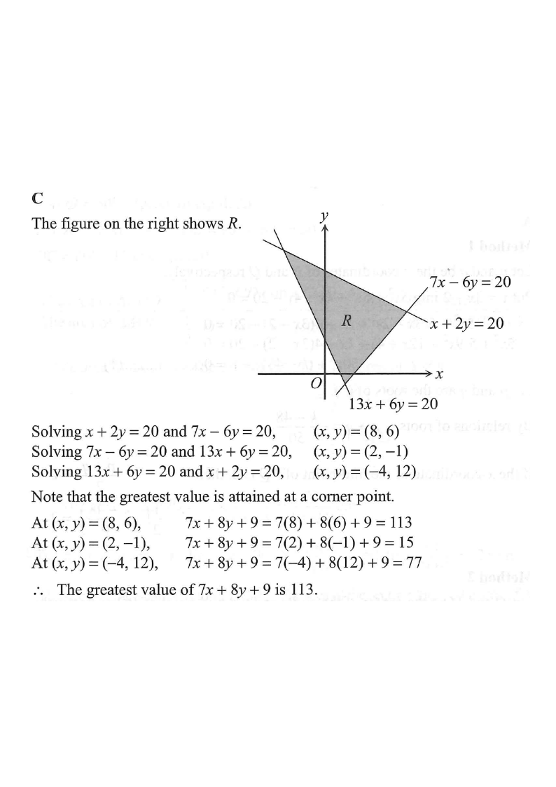

Drag / scroll the solution → the highlighted corner shows where the maximum is tested.
\(7x-6y=20\)\(x+2y=20\)\(13x+6y=20\)Feasible region \(R\)
HKDSE 2019 · Paper 2 · Q35
\(x+2y \le 20\)
\(7x-6y \le 20\)
\(13x+6y \ge 20\)
Let \(R\) be the region which represents the solution of the above system of inequalities.
If \((x,y)\) is a point lying in \(R\), then the greatest value of \(7x+8y+9\) is
A. 15
B. 77
C. 113
D. 115

Figure (original exam diagram)
STEP 1Sketch the boundary lines.
Replace each inequality by an equation and draw the lines:
Hint: the boundary lines enclose the feasible region \(R\).
STEP 2Find the corner points of \(R\).
Solve the boundary lines pair by pair:
Lines solved
Corner point
\(x+2y=20\) and \(7x-6y=20\)
\((8,\,6)\)
\(7x-6y=20\) and \(13x+6y=20\)
\((2,\,-1)\)
\(13x+6y=20\) and \(x+2y=20\)
\((-4,\,12)\)
Hint: e.g. adding \(x+2y=20\) and \(7x-6y=20\) after scaling? Just solve 2×2 systems directly.
Solving a 2 by 2 System by Elimination\(x+2y=20,\quad 7x-6y=20\ \Longrightarrow\ (8,\,6)\)Each pair of boundary lines is solved simultaneously to give a corner of \(R\).
STEP 3Why only corners matter.
The objective \(7x+8y+9\) is linear, so over a polygon it attains its greatest value at a
corner (vertex) of \(R\). So we only test the three corner points.
Hint: a linear function on a bounded polygon is maximised at a vertex.
Corner-Point Principle\(\max_{R}(ax+by+c)=\max\text{ over the vertices of }R\)The objective \(7x+8y+9\) is linear, so only the three corners need to be tested.
Hint: don't forget the constant \(+9\) in each substitution.
STEP 5Compare the values.
The three values are \(113,\ 15,\ 77\). The largest is \(113\), attained at \((x,y)=(8,6)\).
Hint: the "greatest" of the tested values gives the maximum of the objective.
STEP 6Match the option.
\(113=\) option C.
Hint: option D (115) is a trap — be careful with signs of \((-4,12)\).
Answer: The greatest value of \(7x+8y+9\) is \(\mathbf{113}\) → C
PRACTICESimilar question — try it yourself
Question. The boundary lines of the feasible region \(R\) are \(6x-5y=16\), \(3x+y=1\) and \(2x+3y=24\). If \((x,y)\) is a point lying in \(R\), find the greatest value of \(4x+5y+7\).
Show the worked solution
Step 1. \(6x-5y=16\) with \(3x+y=1\): from \(y=1-3x\), \(6x-5(1-3x)=16\), so \(21x=21\), \(x=1\) and \(y=-2\): corner \((1,-2)\).
Step 2. \(3x+y=1\) with \(2x+3y=24\): \(y=1-3x\) gives \(2x+3-9x=24\), so \(x=-3\) and \(y=10\): corner \((-3,10)\).
Step 3. \(6x-5y=16\) with \(2x+3y=24\): multiply the first by \(3\) and the second by \(5\), then add: \(28x=168\), so \(x=6\) and \(y=4\): corner \((6,4)\).
Step 4. Evaluate \(4x+5y+7\): at \((6,4)\) it is \(24+20+7=51\); at \((1,-2)\) it is \(4-10+7=1\); at \((-3,10)\) it is \(-12+50+7=45\).
Step 5. The greatest value is \(51\), attained at \((6,\,4)\).